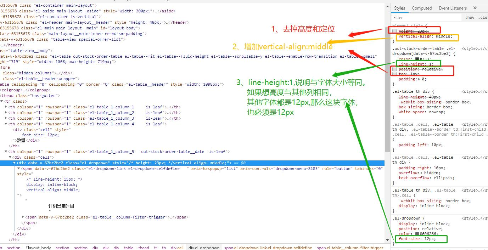
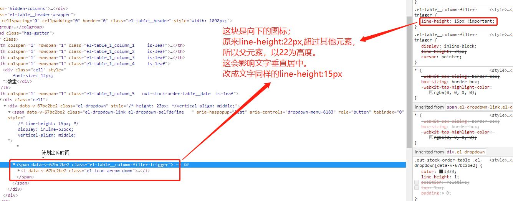

所谓行高是指文本行基线间的垂直距离。要想理解这句话首先得了解几个基本知识。
请点击 CSS行高——line-height
CSS中起高度作用的应该就是height以及line-height了吧！如果一个标签没有定义height属性，那么其最终表现的高度一定是由line-height起作用。
先看一段代码：
浏览器显示效果
结果是如此的显而易见，
test1 div有文字大小，但行高为0，结果div的高度就是个0；
test2 div文字大小为0，但是有行高，为20像素，结果div高度就是20像素。
这就说明撑开div高度的是line-height，不是文字内容。
到底这个line-height行高怎么就产生了高度呢？在inline box模型中，有个line boxes，它是看不见的，它的工作就是包裹每行文字。一行文字一个line boxes。例如“中国万岁”这5个字，如果它们在一行显示，只有一个line boxes罩着你；但“我是中国人”这5个字，要是竖着写，一行一个，一个字罩着一个line boxes，于是总计五个line boxes。line boxes什么特性也没有，就高度。所以一个没有设置height属性的div的高度就是由一个一个line boxes的高度堆积而成的。
其实line boxes不是直接的生产者，真正起作用的是它的手下 – inline boxes，也就是文字，图片，之类的inline属性的标签。
line boxes根据手下，谁的line-height值最高，它就要谁的值，形成高度。例如，
行高还有一个特性，叫做垂直居中性。line-height的最终表现是通过line boxes实现的，而无论line boxes所占据的高度是多少（无论比文字大还是比文字小），其占据的空间都是与文字内容公用水平中垂线的。还拿上面这张图来说吧。
看test1的结果，此时line boxes的高度为0，但是它是以文字“测试”二字的水平中垂线对称分布的。这一重要的特性可以用来实现文字或图片的垂直居中对齐。

